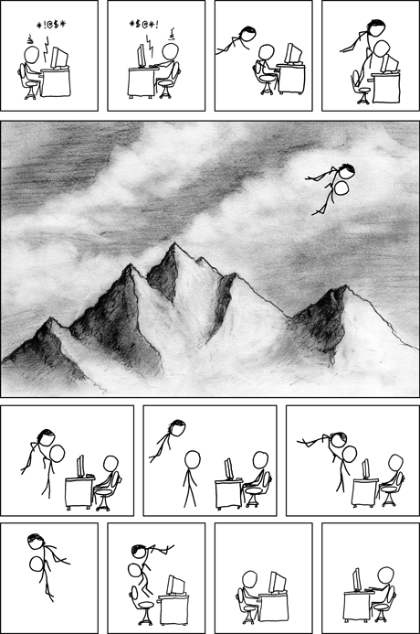
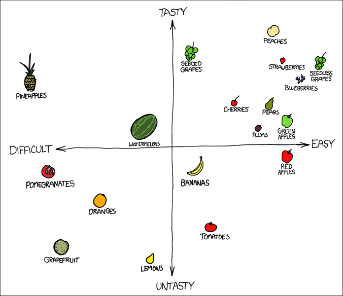

Internet Argument
Meme titled "Internet Argument" from xkcd.com. Published 6/18/2008 by Randall Munroe.
Background
This meme is from xkcd.com, which is a website full of memes and comics. They all share a somewhat academic theme, and a similar art style. These memes may not be as funny as others, but I figured that memes from this website would have the most meaning.
Rhetorical Strategies
This comic took me a while to understand when I first saw it. I tried to skim through it but I got confused. Compared to most other comics, this one has many cells. I think that this organizational structure is a rhetorical strategy. It adds a sense of fluidity to the comic, almost like an animation. This also forces the reader to carefully look through each cell in order. By having many segments, this comic structure reminds me of other chart style memes from xkcd. An example of this is the fruit chart shown below. Another rhetorical strategy used here is pathos because the comic conveys an emotion of pointlessness. The lack of spoken words is responsible for this emotion, combined with the lack of conflict after the two arguers meet. Since the two arguers did not choose physical conflict, their argument did not matter as much as it once seemed.
A chart style meme from xkcd.com. Not being analyzed.
Power Dynamics
Internet arguments are currently common in society. This comic challenges societal norms surrounding the importance of arguments. It conveys the idea that arguments may not always be important, and they should not involve angry conflict. Within this comic, there is a godly figure that brings these two arguers together. This figure has much more power over the other two, and they are trying to use their powers to teach a lesson.
Considering Different Perspectives
Since this comic was created in 2008, there may be differences in how it was interpreted back then versus now. The internet was likely much more anonymous, as people had less of a digital footprint. This could encourage more arguments. On the contrary, I also think there could be reasons for people to argue less on the internet during that time. People could have had more respect for the internet because it was new, encouraging them to act kindly. There is also the possibility that a viewer of this comic is unfamiliar with technology and unable to relate to internet arguments.